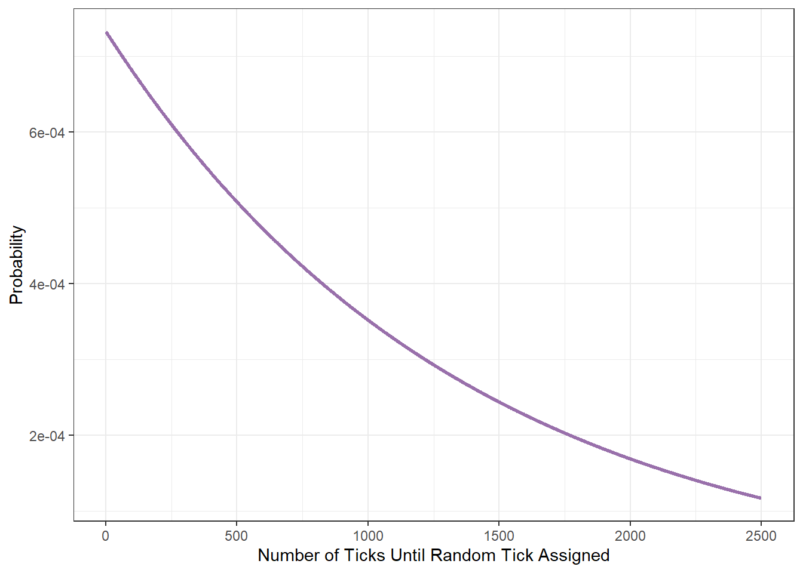

2 Growth Related Tick Mechanics
Timed mechanics in Minecraft are operated on a tick system.
A game tick is where Minecraft’s game loop runs once. The game normally runs at a fixed rate of 20 ticks per second, so one tick happens every 0.05 seconds (https://minecraft.fandom.com/wiki/Tick#Game_tick)
Whereas this document is focused in growth mechanics, no time will be spent discussing the many operations performed in a tick. The reader is encouraged to refer to the Minecraft wiki for more details about ticks.
The operation of a tick that is of interest to this document is the random tick. A random tick is not a unit of time, as is the case with a tick, but is the assignment of an attribute or state to a randomly selected block. A selected block is said to “receive a random tick.”
Minecraft worlds are subdivided into chunks, or vertical columns that are each 16 blocks square.
Chunks consist of one subchunk per 16 blocks of height, each one being a 16 × 16 × 16 = 4096 block cube. Sections are distributed vertically starting at the lowest y level. Every chunk tick, some blocks are chosen at random from each section in the chunk. The blocks at those positions are given a “random tick”.
In Java Edition, the number of blocks chosen from each section is specified by /gamerule randomTickSpeed (defaults to 3), and one block can be chosen multiple times in one chunk tick. (https://minecraft.fandom.com/wiki/Tick#Random_tick)
2.1 Probability of Random Tick Assignment
Mathematically speaking, the blocks chosen to receive a random tick are randomly selected with replacement from the allotment of 4,096 blocks. Based on this information, the probability that any single block is chosen for a random tick within any chunk tick is
\[ \Pr(RTick) = \frac{3}{16 \cdot 16 \cdot 16} = \frac{3}{4096} \approx 7.3242188\times 10^{-4} \]
2.2 Time to Random Tick
The Time to Random Tick (TTR) is a measure of how much time passes between a block receiving random ticks. Because these times are based on game mechanics, they are constant and uninfluenced by the specific mechanics of any crop.
The mean TTR, denoted \(TTR_\mu\), gives the mean time between random tick assignments. It is based on the mean of the Geometric distribution with parameter \(p = \Pr(RTick)\).
\[\begin{aligned} TTR_\mu &= \frac{1}{\Pr(RTick)} \\ &= \frac{1}{7.3242188\times 10^{-4}} \\ &\approx 1365.3333333 \end{aligned}\]
The median TTR, denoted \(TTR_M\), gives the median time between random tick assignments. Fifty percent of random ticks will be assigned in less time that \(TTR_M\) and fifty percent will be assigned in more than \(TTR_M\). Because the Geometric distribution is a right skewed distribution, the median is somewhat lower than the mean. It follows, then, that \(TTR_M\) < \(TTR_\mu\). Calculations of crop yield will differ depending on whether the calculations are based on \(TTR_\mu\) or \(TTR_M\), with \(TTR_\mu\) being more conservative (lower).
\[\begin{aligned} TTR_M &= \frac{-1}{\log_2(1 - p)} \\ &= \frac{-1}{\log_2(1 - \Pr(RTick)} \\ &\approx 946.0303346 \end{aligned}\]
It is also possible to calculate various quantiles of TTR, denoted \(TTR_p\). The formulae for these equations are not simple, but computer algorithms exist that can efficiently produce these results. This document uses R software to calculate quantiles when needed.
2.3 Distributional Background of Ticks
The probability distribution of time to the next random tick is shown in the following plot.

Since players do not tend to think in terms of ticks, the mean time to the next random tick assignment is translated into player friendly time formats in the following table. The columns to the right of the mean show various quantiles. In the p_025 column, 2.5% of the time, the next random tick will be assigned in less than 1.7 seconds. The median time to the next random tick assignment is give in the p_500 column.
| unit | conversion | mean | p_025 | p_050 | p_010 | p_500 | p_900 | p_950 | p_975 |
|---|---|---|---|---|---|---|---|---|---|
| tick | 1 | 1365.33 | 34.00 | 70.00 | 143.00 | 946.00 | 3142.00 | 4088.00 | 5034.0 |
| milliseconds | 5 | 273.07 | 6.80 | 14.00 | 28.60 | 189.20 | 628.40 | 817.60 | 1006.8 |
| seconds | 20 | 68.27 | 1.70 | 3.50 | 7.15 | 47.30 | 157.10 | 204.40 | 251.7 |
| minutes | 1200 | 1.14 | 0.03 | 0.06 | 0.12 | 0.79 | 2.62 | 3.41 | 4.2 |
| hours | 7200 | 0.19 | 0.00 | 0.01 | 0.02 | 0.13 | 0.44 | 0.57 | 0.7 |
2.3.1 Number of Random Ticks Assigned
Another metric of interest to the player may, at times, be the number of random ticks assigned within a certain time frame. This metric can be modeled using a Binomial distribution with the parameters \(p = 7.3242188\times 10^{-4}\) and \(n\) is equal to the number of ticks in time time period of interest. The mean of the Binomial distribution is \(n \cdot p\) with a standard deviation of \(\sqrt{n \cdot p \cdot (1 - p)}\). With 1200 ticks occurring each minute, the mean number of random ticks assigned to a block within a minutes is \(\mu = 0.8789062\) with standard deviation \(\sigma = 0.9371566\).
Another way to interpret this is that 58.49% of blocks receive at least one random tick during each minute.